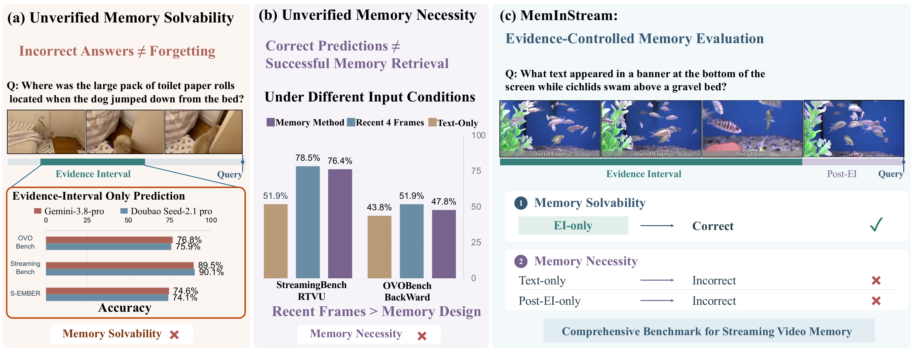
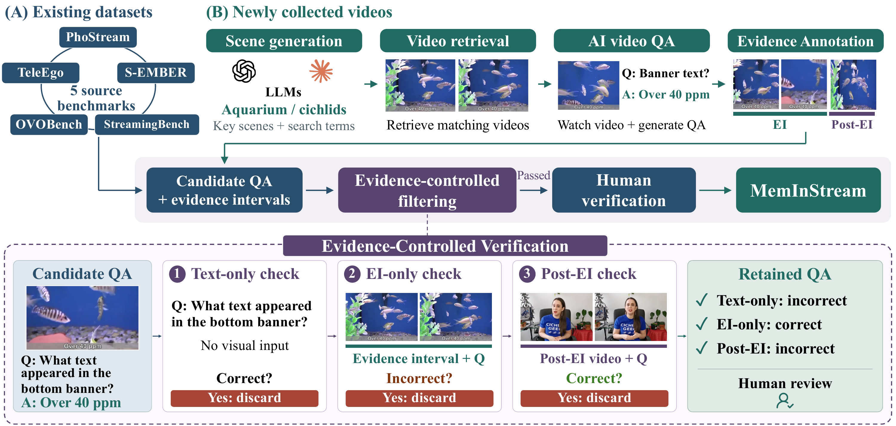
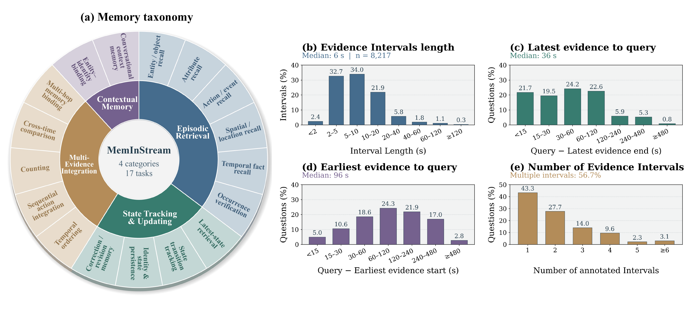

Episodic Retrieval
Recall facts, entities, and events from specific past observations.
Explore tasks
- Entity / Object Recall
- Attribute Recall
- Action / Event Recall
- Spatial / Location Recall
- Temporal Fact Recall
- Occurrence Verification
Streaming video understanding aims to continuously process incoming visual observations, making the retention and retrieval of relevant information increasingly important as the video history grows. Although existing benchmarks include memory-related questions, question-answering accuracy alone does not reliably measure memory capabilities. Incorrect predictions may arise from failures in visual understanding rather than forgetting, whereas correct predictions may rely on linguistic priors or recent observations without requiring historical memory. To address these ambiguities, we introduce MemInStream, a benchmark dedicated to evaluating memory capabilities in streaming video understanding. We develop an evidence-controlled validation protocol that associates each question with temporally localized evidence intervals. The protocol validates evidence solvability and memory necessity by retaining questions that models can answer from the annotated evidence but cannot resolve using recent observations, post-evidence observations, or textual input alone. This helps disentangle memory limitations from understanding failures while reducing memory-independent shortcuts. MemInStream provides a systematic evaluation of memory capabilities through four major categories, covering Episodic Retrieval, State Tracking & Updating, Multi-Evidence Integration, and Contextual Memory across diverse video scenarios. Overall, MemInStream provides a comprehensive and reliable benchmark for systematically evaluating memory capabilities in streaming video understanding.

As a video unfolds, relevant observations move into the past. Models must retain, update, and retrieve this information to answer later questions, even when it is no longer visible in recent frames.
Although many benchmarks include memory-related questions, some can be answered using recent frames, textual priors, or answer-option cues. Correct predictions therefore do not necessarily demonstrate retrieval of historical evidence.
A model may fail even when the supporting evidence is directly available. Verifying memory solvability and memory necessity helps separate memory limitations from understanding failures and shortcut-based success.

Collect candidates from StreamingBench, OVO-Bench, TeleEgo, PhoStream, and S-EMBER. Retrieve additional videos and generate questions for broader task and scenario coverage.
Assign each question a query timestamp and the historical evidence intervals needed to answer it. Add timestamped dialogue for contextual memory tasks.
Use two validation models to check evidence solvability and reject questions answerable from text alone or observations after the evidence.
Review answer correctness, temporal alignment, and evidence completeness against the original videos. Exclude ambiguous or inconsistent questions.

Recall facts, entities, and events from specific past observations.
Maintain and revise information as a video unfolds.
Connect temporally separated observations to answer a question.
Combine remembered dialogue with relevant visual evidence.
A prediction is correct only when the selected answer set exactly matches the ground truth. Category scores are macro-averages over their constituent tasks.
Swipe horizontally to compare scores →
| Model | Size | Input | EOR | AR | AER | SLR | TFR | OV | Episodic Retrieval | LSR | STT | ISP | CRM | State Tracking & Updating | TO | SAI | CNT | CTC | MMB | Multi-Evidence Integration | EIB | CCM | Contextual Memory |
|---|---|---|---|---|---|---|---|---|---|---|---|---|---|---|---|---|---|---|---|---|---|---|---|
| Proprietary models | |||||||||||||||||||||||
| Gemini-3.8-Flash | — | 4frames | 34.5 | 21.7 | 33.3 | 24.6 | 20.0 | 24.1 | 26.4 | 24.2 | 24.8 | 20.6 | 25.4 | 23.8 | 21.5 | 28.1 | 15.6 | 28.4 | 11.9 | 21.1 | 37.3 | 36.6 | 36.9 |
| Gemini-3.8-Flash | — | 30frames | 52.5 | 50.5 | 44.5 | 37.9 | 30.0 | 54.4 | 45.0 | 53.1 | 23.5 | 20.6 | 34.5 | 32.9 | 25.2 | 35.2 | 27.9 | 35.1 | 13.1 | 27.3 | 33.9 | 35.5 | 34.7 |
| Doubao Seed-2.1-pro | — | 4frames | 35.4 | 21.4 | 28.4 | 16.4 | 16.3 | 7.6 | 20.9 | 24.2 | 27.6 | 25.6 | 15.5 | 23.2 | 17.8 | 30.5 | 8.9 | 24.6 | 8.5 | 18.1 | 37.3 | 26.9 | 32.1 |
| Doubao Seed-2.1-pro | — | 30frames | 50.7 | 48.5 | 39.6 | 32.5 | 26.3 | 34.2 | 38.6 | 47.9 | 31.0 | 22.5 | 26.1 | 31.9 | 20.7 | 33.3 | 25.3 | 29.9 | 16.5 | 25.1 | 39.0 | 33.3 | 36.2 |
| Open-source offline models | |||||||||||||||||||||||
| Qwen2.5-VL | 7B | 4frames | 7.2 | 6.4 | 7.3 | 4.6 | 3.7 | 1.3 | 5.1 | 3.1 | 6.2 | 7.5 | 4.9 | 5.4 | 7.0 | 9.5 | 2.3 | 6.2 | 8.5 | 6.7 | 23.7 | 6.5 | 15.1 |
| Qwen2.5-VL | 7B | 30frames | 9.4 | 10.7 | 5.7 | 4.6 | 2.2 | 10.1 | 7.1 | 4.6 | 5.5 | 6.9 | 4.9 | 5.5 | 4.1 | 11.4 | 1.3 | 6.2 | 6.3 | 5.8 | 22.0 | 7.5 | 14.8 |
| Qwen3-VL | 8B | 4frames | 20.2 | 11.0 | 13.3 | 5.7 | 3.3 | 7.6 | 10.2 | 9.3 | 16.6 | 5.6 | 7.8 | 9.8 | 13.7 | 17.6 | 4.7 | 16.6 | 4.6 | 11.4 | 32.2 | 8.6 | 20.4 |
| Qwen3-VL | 8B | 30frames | 25.6 | 29.1 | 16.4 | 11.4 | 9.4 | 12.7 | 17.4 | 18.0 | 11.0 | 5.6 | 11.3 | 11.5 | 10.0 | 19.1 | 7.6 | 16.6 | 2.8 | 11.2 | 37.3 | 2.2 | 19.7 |
| InternVL3.5 | 8B | 4frames | 27.8 | 14.1 | 15.1 | 12.5 | 5.5 | 3.8 | 13.1 | 22.7 | 28.3 | 13.8 | 20.4 | 21.3 | 18.5 | 19.1 | 8.6 | 23.2 | 13.1 | 16.5 | 49.2 | 18.3 | 33.7 |
| InternVL3.5 | 8B | 30frames | 29.2 | 34.8 | 16.2 | 12.1 | 6.5 | 19.0 | 19.6 | 31.4 | 19.3 | 13.8 | 18.3 | 20.7 | 17.4 | 20.5 | 11.2 | 20.9 | 8.5 | 15.7 | 39.0 | 16.1 | 27.6 |
| Online models · Training-free | |||||||||||||||||||||||
| FluxMem (Qwen2.5) | 7B | 1fps | 11.7 | 16.1 | 6.5 | 5.7 | 2.9 | 13.9 | 9.5 | 2.6 | 2.8 | 3.1 | 6.3 | 3.7 | 1.9 | 6.7 | 1.0 | 5.7 | 3.4 | 3.7 | 17.0 | 4.3 | 10.6 |
| FluxMem (Qwen3) | 8B | 1fps | 35.9 | 51.2 | 19.8 | 20.4 | 17.8 | 24.1 | 28.2 | 21.7 | 20.7 | 18.1 | 40.1 | 25.2 | 24.1 | 25.2 | 10.9 | 24.6 | 8.0 | 18.6 | 47.5 | 4.3 | 25.9 |
| Response-G1 (Qwen2.5) | 7B | 0.25–1†fps | 6.7 | 7.4 | 5.0 | 3.6 | 4.1 | 6.3 | 5.5 | 2.1 | 3.5 | 1.3 | 8.5 | 3.8 | 4.8 | 4.8 | 2.6 | 4.3 | 2.8 | 3.9 | 6.8 | 0.0 | 3.4 |
| Response-G1 (Qwen3) | 8B | 0.25–1†fps | 36.8 | 65.2 | 22.4 | 24.3 | 18.6 | 27.9 | 32.5 | 23.7 | 24.8 | 28.1 | 54.9 | 32.9 | 28.9 | 25.2 | 13.5 | 26.1 | 6.8 | 20.1 | 47.5 | 8.6 | 28.0 |
| HERMES (Qwen2.5) | 7B | 0.5fps | 10.8 | 16.1 | 5.7 | 2.1 | 2.0 | 10.1 | 7.8 | 1.6 | 3.5 | 3.1 | 14.8 | 5.7 | 3.0 | 5.2 | 0.8 | 4.7 | 3.4 | 3.4 | 17.0 | 3.2 | 10.1 |
| Online models · Training-based | |||||||||||||||||||||||
| Flash-VStream (Qwen2) | 7B | 1fps | 30.9 | 31.1 | 28.4 | 20.4 | 30.2 | 17.7 | 26.5 | 34.0 | 21.4 | 29.4 | 59.2 | 36.0 | 39.6 | 30.5 | 21.4 | 36.0 | 16.5 | 28.8 | 50.9 | 19.4 | 35.1 |
| StreamForest (Qwen2) | 7B | 1fps | 52.5 | 67.6 | 38.5 | 37.1 | 27.4 | 29.1 | 42.0 | 33.5 | 29.7 | 40.0 | 45.1 | 37.1 | 48.5 | 39.5 | 33.1 | 41.7 | 23.9 | 37.3 | 52.5 | 18.3 | 35.4 |
| TimeChat-Online | 7B | 0.2–1*fps | 17.9 | 36.8 | 7.6 | 8.6 | 12.2 | 19.0 | 17.0 | 7.2 | 14.5 | 6.3 | 54.2 | 20.5 | 20.0 | 21.0 | 18.0 | 16.1 | 5.7 | 16.1 | 37.3 | 0.0 | 18.6 |
| AURA | 8B | 2‡fps | 40.8 | 44.2 | 27.1 | 24.6 | 25.7 | 20.3 | 30.4 | 38.1 | 22.1 | 26.3 | 24.7 | 27.8 | 22.2 | 25.2 | 22.7 | 27.0 | 15.9 | 22.6 | 42.4 | 18.3 | 30.3 |
| JoyAI-VL-Interaction | 8B | 2‡fps | 53.4 | 65.6 | 32.0 | 32.1 | 31.2 | 31.6 | 41.0 | 43.3 | 35.9 | 28.8 | 67.6 | 43.9 | 39.6 | 37.1 | 30.7 | 37.4 | 18.2 | 32.6 | 50.8 | 8.6 | 29.7 |
| MOSS-VL-Realtime | 11B | 2‡fps | 26.9 | 31.1 | 14.8 | 11.8 | 11.6 | 12.7 | 18.2 | 18.6 | 17.9 | 10.6 | 9.9 | 14.2 | 9.6 | 9.5 | 14.6 | 16.6 | 4.0 | 10.9 | 18.6 | 9.7 | 14.2 |
| MOSS-VL-Realtime | 11B | 1§fps | 31.8 | 45.8 | 16.2 | 21.1 | 14.3 | 22.8 | 25.3 | 19.1 | 26.2 | 26.3 | 37.3 | 27.2 | 29.6 | 32.4 | 29.7 | 30.3 | 10.8 | 26.6 | 42.4 | 6.5 | 24.4 |
Input settings. Proprietary and offline models receive only the N most recent sampled frames before the query. Online models process observations chronologically; their input column reports the sampling rate in fps.
† Response-G1 dynamically adjusts between 0.25 and 1 fps. ‡ Up to 60 recent frames per query. * TimeChat-Online uses 4–316 input frames with adaptive sampling at 0.2, 0.5, or 1 fps. § Up to 768 input frames.